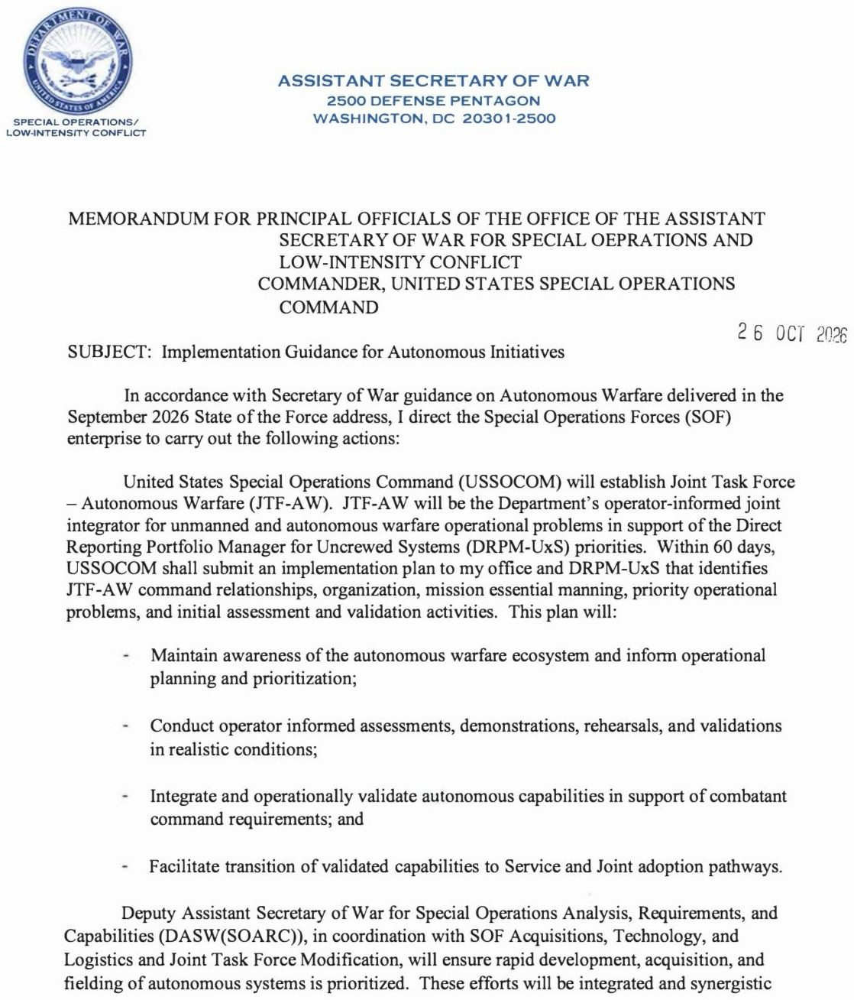
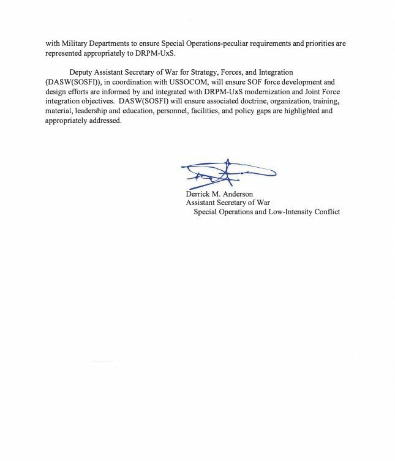
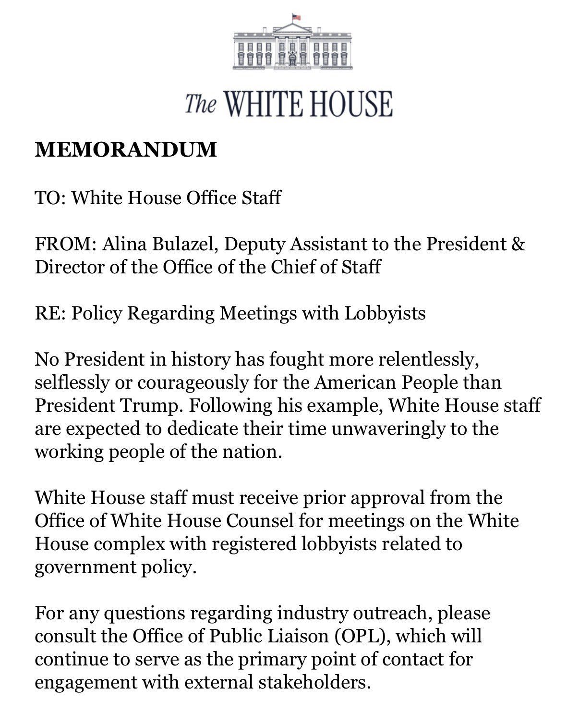
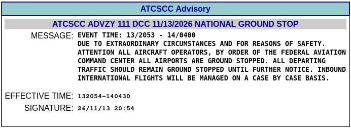
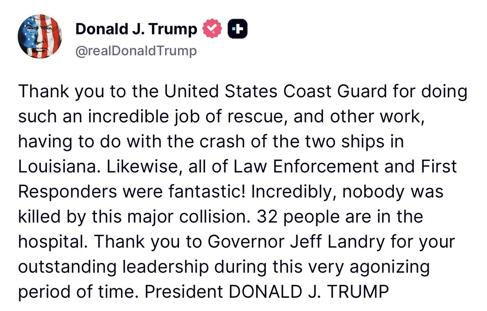

The @FAAnews issued a nationwide ground stop for all U.S. airports following a communication issue impacting all Air Route Traffic Control Centers. FAA technicians are investigating the issue. We will provide immediate updates as we have them.
The Department of War announced today the official redesignation of the Chief Digital and Artificial Intelligence Office (CDAO) as the Department of War Super Intelligence Office (SIO). The rebrand follows President Trump's executive direction to transition federal terminology and national security strategy from legacy artificial intelligence to the era of Super Intelligence.
Alongside the updated designation, the organization unveiled a new official logo and visual identity, launched its new primary digital domain at www.si.mil and transitioned its official social media presence on LinkedIn as DoW SIO and X @SIODoW.
"This redesignation is a clear signal of where the Department of War is going," said Cameron Stanley. "We have moved beyond experimental prototypes. As the Super Intelligence Office our mission is to harness the full power of sovereign Super Intelligence to ensure decisive military superiority across every domain."
What's New:
Official Organizational Designation: DoW SIO Updated Logo Web Presence: All public resources, acquisition pathways, and partnership portals are now consolidated at www.SI.mil Modernized Social Channels: The public, defense industrial base, and tech community can connect with the office directly on LinkedIn at DoW SIO and on X at @SIODoW
The transition will roll out across digital systems, enterprise applications and component headquarters over the coming weeks. Existing operational programs, industry solicitations and defense partnerships will continue uninterrupted under the new banner.
For more information, visit the new digital home at www.SI.mil
About the Department of War Super Intelligence Office:
The DoW Super Intelligence Office is the DoW's organization responsible for putting SI tools in the hands of warfighters at speed and scale. It supports the digital programs Maven Smart System and the War Data Platform and has the mission of enabling an "SI-First" military. For more information, visit the new digital home at SI.mil.
Read the full press release here: https://www.war.gov/News/Releases/Release/Article/4647618/department-of-war-redesignates-cdao-as-super-intelligence-office/
Built by some of WWII’s most visionary minds, the Office of Strategic Services (OSS) carried American resolve into the hardest places and against the most determined enemies. It embodied the determination of Americans who believed they could achieve the impossible.
Today, after 81 years, the OSS returns.
Our operators deserve a voice equal to the burden placed upon their shoulders. @ASWAndersonSOF advocated for a Secretariat for Special Operations that operates in both name and function, setting the pace, driving coordination, and ensuring SOF has the resources needed.
This redesignation strengthens SOF representation within @DeptofWar and reaffirms America’s commitment to the forces entrusted with the Nation’s most demanding missions.
Read more here 👇
.@SecWar's vision for AUTOWARCOM is reshaping the future of American combat power.
At my direction, @USSOCOM is bringing that vision to life by establishing Joint Task Force-Autonomous Wartare to rapidly integrate and field unmanned and autonomous systems.
This is more than new technology. It's about rapidly delivering lethal, survivable capabilities directly into the hands of our operators.


The B-21 Raider executed its first weapons release test, transitioning the sixth-generation platform from flight testing to a functional weapons system.
The Raider is on track to become the future backbone of the bomber fleet and to have aircraft on the ramp at Ellsworth AFB, South Dakota, in 2027.
Learn more about this milestone 👇
BREAKING: A major shake-up is unfolding inside the U.S. Navy, with multiple senior commanders and top officials quietly removed from their positions without public announcements, sparking outrage and questions over the Pentagon’s lack of transparency, AP reports.
The removals include the ENTIRE leadership team of the nuclear-powered USS South Dakota following an underwater grounding, the commander of the USS Michael Murphy, deployed to the Middle East, and Rear Adm. Brian Monahan, who left his post amid a Navy investigation. Even Congress was reportedly left questioning why these departures were kept under wraps.
BREAKING: Three U.S. military bases in Britain are reportedly on complete lockdown following a drone infiltration at RAF Lakenheath, with sirens sounding at RAF Mildenhall and RAF Feltwell as security forces scramble to respond, per BBC.
The U.S. Air Force confirmed it responded to "suspected unauthorised drone activity" over RAF Lakenheath on Friday evening. Reports indicate the airbase hit FPCON DELTA—the highest U.S. military force protection level, reserved for imminent attack threats .
EXCLUSIVE: White House Chief of Staff Stephen Miller Has Enacted a Total BAN On Unauthorized Meetings with Lobbyists and Special Interests by White House Staff
This is a marked break from his predecessor and a signal that there is a massive crackdown coming against corrupt DC influence. Here is the memo just sent to all White House Staff:
“No President in history has fought more relentlessly, selflessly or courageously for the American People than President Trump.”
“Following his example, White House staff are expected to dedicate their time unwaveringly to the working people of the nation.”
“White House staff must receive prior approval from the Office of White House Counsel for meetings on the White House complex with registered lobbyists related to government policy.”
“For any questions regarding industry outreach, please consult the Office of Public Liaison (OPL), which will continue to serve as the primary point of contact for engagement with external stakeholders.”

The FAA has issued a nationwide ground stop for all aircraft within the national airspace system "due to extraordinary circumstances and for reasons of safety" by order of the FAA Command Center.

Widespread power outages threaten multiple US states as residents are told to gather emergency supplies now
Trump admin pushes federal agencies to go English-only in sweeping new directive

You're tellin me in 24 hrs, the NVidia CEO steps down in a spy scandal, all of Microsoft & Outlook goes down globally, a building collapses in NYC, a Tanker sinks a River cruise ship in New Orleans and now the FAA has grounded ALL flights across the country?! WTF is going on??
The symbolism of sinking America's flagship on veterans day and the symbolism that she refuses to sink and gave proof through the night that she was still there
BREAKING: New House Chief of Staff Stephen Miller has "few friends and is impossible to lobby," per POLITICO
JUST IN: 🇺🇸 FAA issues nationwide ground stop for all flights.
All flight departures have been halted.
Watch as the SS United States sinks off Florida coast to become a massive reef.
BREAKING: Amtrak facing outages nationwide.
Securitize filed a strongly supportive comment letter on the SEC’s innovation exemption for Tokenized Securities Venues (TSVs). We applaud the Commission, the Crypto Task Force, and Trading and Markets for opening the door to new onchain market models for U.S. equities, like AMMs and liquidity pools, while keeping the protections that make U.S. markets the gold standard: issuer choice, permissioned access, KYC, full anti-fraud enforcement, and strong disclosures. Our letter applauds the Order's requirement that tokenized stocks carry the same rights as the underlying shares (the same dividends, voting rights, and economic interest), which makes them real shares rather than synthetic wrappers. We believe the U.S. should be where these new market models are built and tested, and our letter offers a few refinements to make the framework even stronger, including embedding compliance directly into the token so protections travel with it wherever it goes. We see the five-year exemption as a smart way to gather data on the way to a permanent framework, and we look forward to continuing to work with the Commission.
Link to the letter below:
🇯🇵 BREAKING: Japan's SBI Holdings and the National Bank of Cambodia have signed an agreement to test the tokenization of Cambodian government bonds on @CantonNetwork (canton-network:native).
The initiative aims to expand investor access, automate bond administration, and improve transaction efficiency.
The central banks of the UK, Singapore and Thailand have completed a trial of synchronised FX settlement across different currencies and systems.
Under Project Meridian FX APAC, @bankofengland, @Mas_sg and @BankofThailand tested payment-versus-payment FX settlement across both RTGS and DLT systems.
🇬🇧🇸🇬🇹🇭 LATEST: The UK, Singapore and Thailand’s central banks completed a trial showing that cross-border currency trades can settle simultaneously across traditional and distributed ledger systems.
カンボジア国立銀行との、ステーブルコインを活用した日本・カンボジア間の次世代国際送金に関する実証実験（PoC）の実施に向けた基本合意書（MOU）締結のお知らせ［SBIホールディングス］
I was surprised at how much Medicare/Medicaid/Social Security are now propping up local economies and personal incomes
If you look through the data, Medicare/Medicaid have become the biggest sources of income for particularly non-metropolitan areas. Some stats in the data:
- Government transfers are now 17.6% of all personal income in the US, up from about 8% in 1970. Medicare and Medicaid are 46% of all government transfer dollars!
- 53% of counties get more than 25%+ of their income from government transfers (this covers about 72M people).
- Kentucky seems to be the home of the Colonel and government transfer programs. Twelve of the top fifteen counties receiving government transfers are there. Owsley County gets 63% of personal income from transfers, and Medicaid alone is 32% of all income in the county.
Those government transfers via Medicaid/Medicare get transmuted alchemically into jobs. Phoebe Putney Health System has 6000+ workers and is the largest employer in southwest Georgia. Dougherty County, where it's based, gets 34% of its personal income from government transfers.
In New York we have a program that pays friends and family as caregivers. In 2023 it grew by 57,000 jobs and became 38% of all job growth in the state (they’ve made changes to the program now that have flattened it).
We have become a country of healthcare jobs with a propping of government dollars. Is that fine?
I think this grand bargain worked for a while. We were still seeing economic productivity, government spending hadn’t yet gotten too crazy, etc. But a few things are happening now that suggest the bargain is falling apart.
President Trump is the first President in modern history to actually *lower* prescription drug prices.
Many have promised. Only President Trump delivered.
JUST IN: 🇷🇺 Russia says first patient treated with personalized mRNA cancer vaccine shows no signs of new tumors four months after treatment.
Introducing Claude Meetings: add Claude to your team’s video call and it builds docs, whiteboards, and other artifacts with you while you’re still talking.
Starting to roll out in beta on Team and Enterprise plans.
"Japan is facing an intense wave of AI-powered cyberattacks that’s laid bare the vulnerability of one of the world’s largest economies to a new breed of hacking," per Bloomberg.
EXCLUSIVE: We spent weeks in Napa Valley investigating Gavin Newsom's wine empire. According to a whistleblower, the operation is built on undocumented migrant labor, in violation of the law.
Illegal aliens pick the grapes—and Newsom sells the wine for up to $7,000 a bottle.
🚫 CLAIM: Today, Iran’s Islamic Revolutionary Guard Corps (IRGC) said it attacked a “U.S. early-warning radar” in Bahrain.
✅ FACT: The IRGC launched two one-way attack drones toward Bahrain and both were shot down by U.S. forces. There were no injuries or damage.
What do a pharmacy owner and an accountant have in common?
In this case, they both face 20 years in prison for their alleged roles in a $51 MILLION health care fraud scheme.
A 31-count federal indictment charges the pharmacy owner with alleged health care fraud and money laundering, while the accountant was charged with alleged money laundering.
➡️$51 million in fraud. ➡️Federal charges. ➡️Up to 20 years behind bars.
THAT's what happens when you rip off the American health care system.
Illegal aliens and ineligibles were siphoning up to $218 million a year in taxpayer-funded housing assistance.
That ends now under @POTUS.
JUST IN: 🇮🇳🇵🇰 India's capital Delhi overtakes Pakistan's Lahore to become the world's most polluted city as air quality drops to hazardous levels.
Amazing scenes in Warsaw. Poland’s Independence Day! 🔥🇵🇱
UPDATE: All 8 victims killed in the Brooklyn building collapse have been identified, including 2 children:
- Nicole Daniela Salvado Rodriguez, 9 - Juan Daniel Salvado Guzman, 31 - Kevin Santiago Reyes Gonzalez, 10 - Ndiaye Mamadou, 31 - Barry Mamadou, 23 - Gabriel Siguencia, 22 - Edgar Sapon, 26 - Jose Luis Caguana Cosquillo, 26
卧槽！！这次将军玩真的了
天塌了
11月11日，朝鲜正式公布修订后的宪法全文，其中明确将韩国视为一个独立国家。
宪法第二条写道：“朝鲜民主主义人民共和国的领土包括北部与中华人民共和国和俄罗斯联邦接壤、南部与大韩民国接壤的地区，以及以此为基础划定的领海和领空。”与旧版宪法不同，新版文本明确将韩国称为邻国，但没有具体划定陆地和海上边界。
此外，新版宪法删除了有关朝鲜半岛统一的相关表述，也不再将韩国称为“头号敌对国家”或“永远的主要敌人”
“Obama CIA Director John Brennan's son arrested on child pornography charge after 'sexually explicit' materials found on his phone”
JUST IN: Mexican official flees to the U.S. after secretly helping the CIA conduct anti-cartel operations in Mexico.
Remarkable Video - Kremlin Allows Media to Record 30 Minutes of Discussion Between Putin, Witkoff and Kushner.
#BREAKING: Illinois freed illegal who killed a Marine vet in a DUI crash without telling ICE.